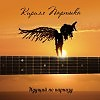

Мертвая хватка
-
В 2015 году Министерство культуры Правительства Хабаровского края выпустило аудиодиск с песнями К. Партыки в различных жанрах, в которых когда либо работал автор - от "бардовской" песни и шансона до хард-рока. Это своего рода "джем" из произведений разных лет.